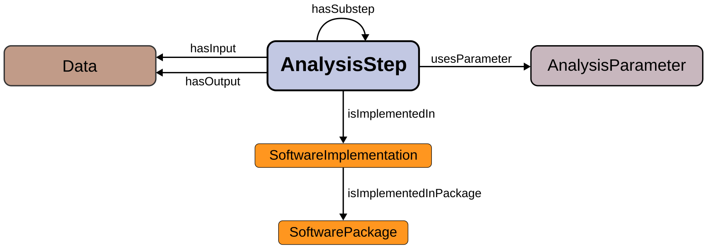

Neuroelectrophysiology Analysis Ontology - Base classes
Release: 2024-XX-XX
- This version:
- http://purl.org/neao/0.1.0/base#
- Latest version:
- http://purl.org/neao/base#
- Revision:
- 0.1.0
- Issued on:
- 2024-XX-XX
- Authors:
- Cristiano Köhler, Forschungszentrum Jülich
- Michael Denker, Forschungszentrum Jülich
- License:

- Visualization:

Introduction back to ToC
Thist module defines the core classes and properties used in the Neuroelectrophysiology Analysis Ontology (NEAO).
Namespace declarations
| biro | <http://purl.org/spar/biro/> |
| dcterms | <http://purl.org/dc/terms/> |
| neao_base | <http://purl.org/neao/base#> |
| owl | <http://www.w3.org/2002/07/owl#> |
| rdf | <http://www.w3.org/1999/02/22-rdf-syntax-ns#> |
| rdfs | <http://www.w3.org/2000/01/rdf-schema#> |
| skos | <http://www.w3.org/2004/02/skos/core#> |
| vann | <http://purl.org/vocab/vann/> |
| xml | <http://www.w3.org/XML/1998/namespace> |
| xsd | <http://www.w3.org/2001/XMLSchema#> |
NEAO Base classes: Overview back to ToC
This ontology has the following classes and properties.Classes
- analysis step
- data
- data representation
- electrophysiology signal source
- function
- parameter
- program
- software implementation
- software package
Object Properties
- has input
- has output
- has source
- has substep
- is implemented in
- is implemented in package
- is represented as
- uses parameter
Data Properties
Annotation Properties
NEAO Base classes: Description back to ToC
An overview of the main relationships is depicted in the diagram below:

The NEAO ontology model is constructed upon the central AnalysisStep class, that represents any process that generates new data entities (e.g., generating artificial spike trains) or performs specific operations aimed at extracting additional information during the analysis using existing data entities. For example, a time series with the raw signal recorded from an electrode can be low-pass filtered to extract the local field potential (LFP) component (the step produces transformed data). Additionaly, this new time series with the LFP data can be used in another step to compute the power spectral density (the step produces new, derived data). Therefore, every stage of the analysis generates new data or applies particular operations to data entities.
The inputs and outputs of the analysis steps are represented by the Data class. This represents any entity storing information needed throughout the analysis. It might represent the data created or transformed by an analysis step, or it can represent data from an electrophysiological recording obtained from neural tissue (or comparable data generated by a simulation). For example, the raw signal time series saved by the recording apparatus, the filtered LFP time series, and the array holding the power spectral density estimates are instances of the Data class.
An information entity that regulates the behavior of the analysis step is a parameter, and is represented by the AnalysisParameter class. A parameter does not provide data that is used by the step to produce the output. For example, in a low-pass filtering step in the analysis to produce the LFP, the time series with the raw wideband signal is the data input, and the low-pass frequency cutoff frequency value is a parameter.
The three core classes are related by the object properties hasInput, hasOutput, and usesParameter. Furthermore, several annotation properties are used to provide clear and unambiguous descriptions of the entities represented by the classes. These include abbreviations (abbreviation property), bibliographic references (hasBibliographicReference), labels (skos:prefLabel and skos:altLabel properties) and the class description (using rdfs:comment property).
For the disambiguation, the skos:prefLabel annotation property provides the preferred label to refer to the entity, and the rdfs:comment annotation provides details to understand the entity (e.g., details of the computation, inputs, and outputs involved in an analysis step). Synonyms are provided by the skos:altLabel property. The NEAO abbreviation annotation property provides suggested abbreviations.
The specific analysis method used in a step of the analysis can be implemented by different software codes, such as distinct open-source toolboxes that are available to analyze electrophysiology data. The core NEAO model has two classes describing the software implementation of the analysis step:
The main source of the code used to execute the operations involved in the analysis step is represented by the SoftwareImplementation class. This is the code that take any given data input, transform it, and produce the desired results.
The SoftwarePackage class is used to describe collections of software, such as toolboxes with many functionality for neuroelectrophysiology data analysis (i.e., that bundle together different pieces of code).
The relationship between SoftwareImplementation and SoftwarePackage is established with the property isImplementedInPackage. The relationship between the AnalysisStep and SoftwareImplementation is defined using the isImplementedIn property. The details of the individuals of each class are provided by distinct properties. The version property of SoftwareImplementation is used to define the version of the software. The packageName and packageVersion properties of SoftwarePackage specify the package name and version, respectively.
Program and Function are two subclasses of SoftwareImplementation that correspond to the two main approaches used to implement the code for an analysis step:
The entity represented by Program is an executable that has been compiled or a complete script that the operating system can call to perform the analysis step (for example, an executable that reads a file, computes the power spectral density using the Welch technique, and saves a file containing the power spectral density).
The entity represented by Function is a small, reusable code that is used as a building block in larger programs that execute several steps in the analysis.
Specific details of these two forms of implementing software are defined using additional properties. The nameInDefinition property in Function specifies the name that is used in the function declaration and in applications that utilize the function code. The programName property of Program specifies the name of the program as published.
Cross-reference for NEAO Base classes classes, object properties and data properties back to ToC
This section provides details for each class and property defined by NEAO Base classes.Classes
- analysis step
- data
- data representation
- electrophysiology signal source
- function
- parameter
- program
- software implementation
- software package
analysis stepc back to ToC or Class ToC
IRI: http://purl.org/neao/base#AnalysisStep
- is in domain of
- has input op, has output op, has substep op, is implemented in op, uses parameter op
- is in range of
- has substep op
- is disjoint with
- parameter c, data c
datac back to ToC or Class ToC
IRI: http://purl.org/neao/base#Data
- is in domain of
- has source op, is represented as op
- is in range of
- has input op, has output op
- is disjoint with
- parameter c, analysis step c
data representationc back to ToC or Class ToC
IRI: http://purl.org/neao/base#DataRepresentation
- is in range of
- is represented as op
electrophysiology signal sourcec back to ToC or Class ToC
IRI: http://purl.org/neao/base#ElectrophysiologySignalSource
- is in range of
- has source op
functionc back to ToC or Class ToC
IRI: http://purl.org/neao/base#Function
- has super-classes
- software implementation c
- is in domain of
- name in definition dp
parameterc back to ToC or Class ToC
IRI: http://purl.org/neao/base#AnalysisParameter
- is in range of
- uses parameter op
- is disjoint with
- analysis step c, data c
programc back to ToC or Class ToC
IRI: http://purl.org/neao/base#Program
- has super-classes
- software implementation c
- is in domain of
- program name dp
software implementationc back to ToC or Class ToC
IRI: http://purl.org/neao/base#SoftwareImplementation
- has sub-classes
- function c, program c
- is in domain of
- is implemented in package op, version dp
- is in range of
- is implemented in op
- is disjoint with
- software package c
software packagec back to ToC or Class ToC
IRI: http://purl.org/neao/base#SoftwarePackage
- is in domain of
- package version dp, package version dp
- is in range of
- is implemented in package op
- is disjoint with
- software implementation c
Object Properties
- has input
- has output
- has source
- has substep
- is implemented in
- is implemented in package
- is represented as
- uses parameter
has inputop back to ToC or Object Property ToC
IRI: http://purl.org/neao/base#hasInput
- has domain
- analysis step c
- has range
- data c
has outputop back to ToC or Object Property ToC
IRI: http://purl.org/neao/base#hasOutput
- has domain
- analysis step c
- has range
- data c
has sourceop back to ToC or Object Property ToC
IRI: http://purl.org/neao/base#hasSource
- has domain
- data c
- has range
- electrophysiology signal source c
has substepop back to ToC or Object Property ToC
IRI: http://purl.org/neao/base#hasSubstep
- has domain
- analysis step c
- has range
- analysis step c
is implemented inop back to ToC or Object Property ToC
IRI: http://purl.org/neao/base#isImplementedIn
- has domain
- analysis step c
- has range
- software implementation c
is implemented in packageop back to ToC or Object Property ToC
IRI: http://purl.org/neao/base#isImplementedInPackage
- has domain
- software implementation c
- has range
- software package c
is represented asop back to ToC or Object Property ToC
IRI: http://purl.org/neao/base#isRepresentedAs
- has domain
- data c
- has range
- data representation c
uses parameterop back to ToC or Object Property ToC
IRI: http://purl.org/neao/base#usesParameter
- has domain
- analysis step c
- has range
- parameter c
Data Properties
name in definitiondp back to ToC or Data Property ToC
IRI: http://purl.org/neao/base#nameInDefinition
package versiondp back to ToC or Data Property ToC
IRI: http://purl.org/neao/base#packageName
- has domain
- software package c
- has range
- literal
package versiondp back to ToC or Data Property ToC
IRI: http://purl.org/neao/base#packageVersion
- has domain
- software package c
- has range
- literal
program namedp back to ToC or Data Property ToC
IRI: http://purl.org/neao/base#programName
versiondp back to ToC or Data Property ToC
IRI: http://purl.org/neao/base#version
- has domain
- software implementation c
- has range
- literal
Annotation Properties
abbreviationap back to ToC or Annotation Property ToC
IRI: http://purl.org/neao/base#abbreviation
- has range
- string
has bibliographic referenceap back to ToC or Annotation Property ToC
IRI: http://purl.org/neao/base#hasBibliographicReference
- has range
- bibliographic reference c
Legend back to ToC
op: Object Properties
dp: Data Properties
Acknowledgments back to ToC
This work was performed as part of the Helmholtz School for Data Science in Life, Earth and Energy (HDS-LEE) and received funding from the Helmholtz Association of German Research Centres. This project has received funding from the European Union’s Horizon 2020 Framework Programme for Research and Innovation under Specific Grant Agreement No. 945539 (Human Brain Project SGA3), the European Union’s Horizon Europe Programme under the Specific Grant Agreement No. 101147319 (EBRAINS 2.0 Project), the Ministry of Culture and Science of the State of North Rhine-Westphalia, Germany (NRW-network "iBehave", grant number: NW21-049), and the Joint Lab "Supercomputing and Modeling for the Human Brain."
The authors would like to thank Silvio Peroni for developing LODE, a Live OWL Documentation Environment, which is used for representing the Cross Referencing Section of this document and Daniel Garijo for developing Widoco, the program used to create the template used in this documentation.